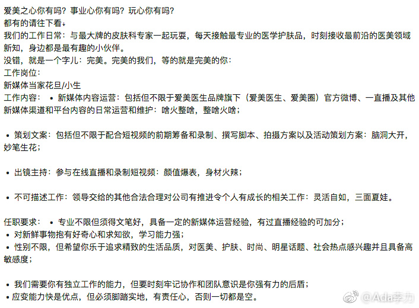
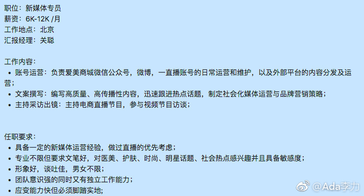

#创业#北京办公室的十个工位还剩一个，但还有两个职位需要招人，还是先招急需的 - 新媒体专员，要能做文案，能干运营，还能做主播出镜，要求很高。
公司发展的一个特征就是新招进来的人越来越牛。
我写的招聘介绍太严肃正经，经过新媒体经理的编辑后，活泼多了。就是不知道我的关注者里更喜欢那种风格？我是一直喜欢用更少的字，把事情说明白的方式。
公司发展的一个特征就是新招进来的人越来越牛。
我写的招聘介绍太严肃正经，经过新媒体经理的编辑后，活泼多了。就是不知道我的关注者里更喜欢那种风格？我是一直喜欢用更少的字，把事情说明白的方式。
- 
- 